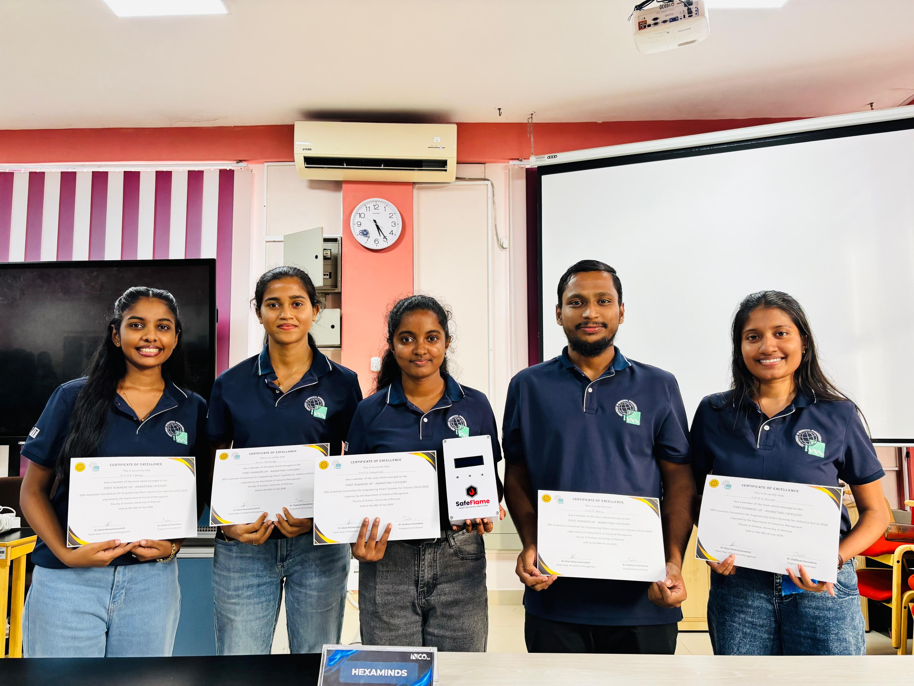
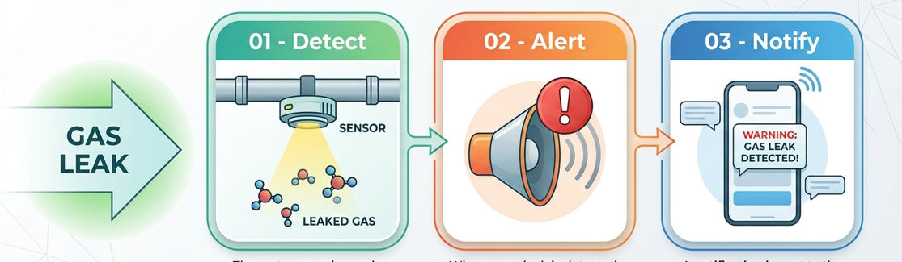

SAFEFLAME - Smart Gas Leak Detection & Alert System
SafeFlame is a smart gas leak detection system designed to detect gas leaks, trigger an immediate alarm, and notify users directly on their mobile phones.
SafeFlame is a smart gas leak detection system developed to improve safety by providing an early warning when a gas leak is detected. The system identifies the presence of leaked gas, activates an alarm, and sends a notification directly to the user's mobile phone.
We developed SafeFlame as a team project for InCo 2026 — Invention Convention for Engineering Smart Systems for Industry, organized by the Department of Industrial Management, University of Kelaniya.
Our team, HexaMinds, was awarded 1st Runner-Up in the Marketing Category for the project.

INCO 2026
🏆 1st Runner-Up
Marketing Category
Working on SafeFlame gave me valuable experience in developing a product as part of a team and presenting an idea in a competitive environment. Through this project, I strengthened my skills in teamwork, communication, problem-solving, product development, and marketing. I also gained a better understanding of how a technical solution can be developed with both user needs and market potential in mind.